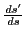
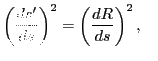

Properties of the evolute
From (14.8),
Let us choose as independent variable the lengths of the arc
on the given curve; then  ,
,  ,
,  ,
,  ,
,  ,
,
 are functions of
are functions of  . Differentiating
(14.18) with respect to gives
. Differentiating
(14.18) with respect to gives
But
,
, from
(9.5); and
, from (12.1)
and (12.2).
Substituting in (14.19) and (14.20), we obtain
and
Dividing (14.22) by (14.21) gives
But
= slope of tangent to the
evolute at  , and
= slope of tangent to the given curve
at the corresponding point
, and
= slope of tangent to the given curve
at the corresponding point  .
.
Substituting the last two results in (14.23), we get
Since the slope of one tangent is the negative reciprocal
of the slope of the other, they are perpendicular. But a
line perpendicular to the tangent at  is a normal to the curve. Hence
is a normal to the curve. Hence
A normal to the given curve is a tangent to its evolute.
Again, squaring equations (14.21) and (14.22)
and adding, we get
But if = length of arc of the evolute, the left-hand member
of (14.24) is precisely the square of

(from (10.2), where , ,
, ).
Hence (14.24) asserts that
 or
That is, the radius of curvature of the given curve increases or
decreases as fast as the arc of the evolute increases. In our
figure this means that
arc
The length of an arc of the evolute is equal to the
difference between the radii of curvature of the given curve
which are tangent to this arc at its extremities.
Thus in Example 14.4.4, we observe that if we fold ( ) over to the
left on the evolute, will reach to , and we have:
The length of one arc of the cycloid (as  )
is eight times the length of the radius of the generating circle.
)
is eight times the length of the radius of the generating circle.
david joyner
2008-08-11